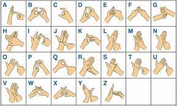
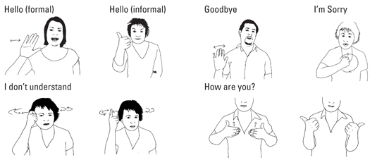

Taking up sign language on the side first started as I aimed to complete my bronze and silver International Award of Edinburgh. However, over these past months, I have taken a specific liking to it, especially as it involves me using hand movements rather than words to express - which was contrasting in comparison to my years of learning French which I found relatively difficult, especially when it came to confidently speaking and pronouncing. When starting to learn, I thought it was perfect, considering I got to avoid my struggle of public speaking, especially in a different language. As I progressed with different signs such as items, expressions, commonly used phrases and greetings, many of these signs had started to become muscle memory. I find this very fascinating as not only would I be using my hands to perform actual signs, but this was an actual whole language I was 'speaking'.